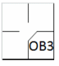

action { batter -> INT }

When an umpire awards the batter or any runner or runners one or more bases because of interference or obstruction, the official scorer shall charge the fielder who committed the interference or obstruction with one error, no matter how many bases the batter, or runner or runners, may advance [OBR 9.12(c)].
Defensive interference is an act by a fielder that hinders or prevents a batter from hitting a pitch [OBR Definition of Terms].
The fielder who committed the interference (usually the catcher) is charged with an error, noted with “INT”.
Offensive interference is an act by the team at bat which interferes with, obstructs, impedes, hinders or confuses any fielder attempting to make a play [OBR Definition of Terms]. This is discussed under rules 13 and 14 of the “Automatic putouts”.
Obstruction is the act of a fielder who, while not in possession of the ball and not in the act of fielding the ball, impedes the progress of any runner [OBR Definition of Terms].
Obstruction of a batter-runner before he reaches first base is a decisive error, recorded as “OB” (upper case) followed by the number of the fielder who committed the obstruction.
NB: Neither “INT” nor “OB” count as a turn at bat.
Obstruction of a runner is an extra base error and is recorded with “ob” (lower case) followed by the number of the fielder who committed the obstruction.
NOTE: If the umpire calls “obstruction” and, in the judgment of the scorer, the runner would have advanced in any case, the action is recorded as if it had taken place normally, and no obstruction is charged against the fielder.
IMPORTANT: Advances made by “obstruction” (lower-case “ob”) are not recorded in the “IO” column of the offensive sheet, which must only be used for advances by the batter-runner to first base through “INT” or “OB”(upper case).
Example 42: The batter-runner reaches first base on interference by the catcher. Mark as “INT” and charge the catcher with a decisive error.
| WBSC | Translation in the scoring tool | Tool |
|---|---|---|
|
|
/* The batter reaches first base on interference from the catcher */ action { batter -> INT } |
|
Example 43: The batter-runner reaches first base on obstruction by the first baseman. Mark as “OB” followed by the number of the fielder who committed the obstruction. Charge a decisive error to the fielder responsible, in this case the first baseman.
| WBSC | Translation in the scoring tool | Tool |
|---|---|---|
|
 |
/* The first batter reaches first base on an obstruction by the first baseman. */ action { batter -> OB3 } |

|